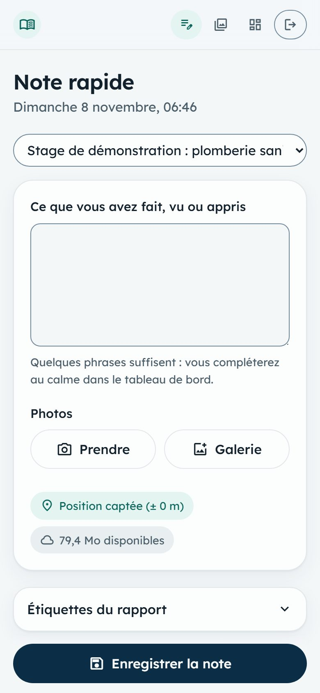
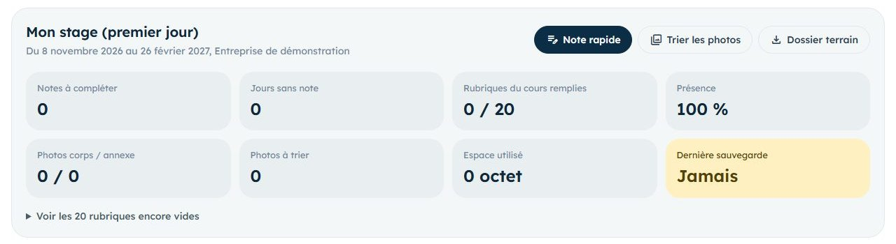
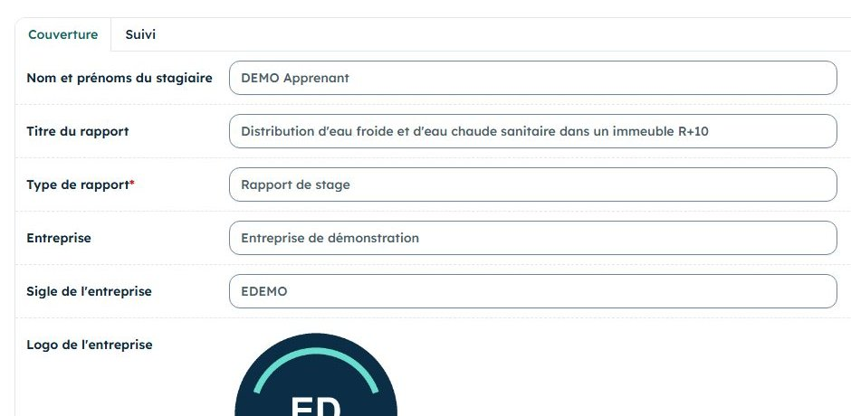
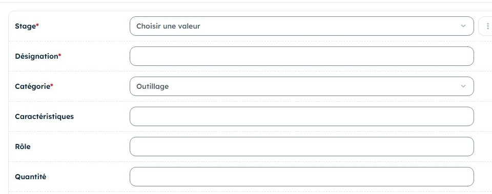
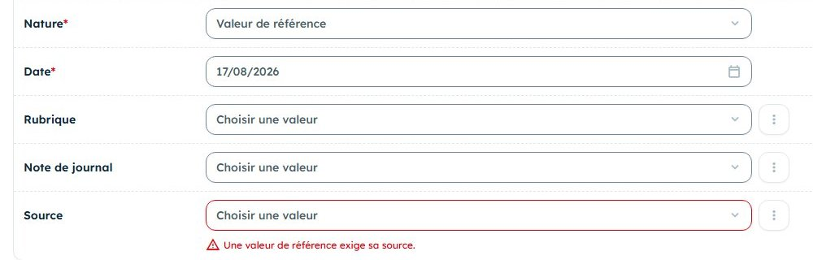

Samedi 14 novembre 2026
Samedi dernier, vous avez découvert l'entreprise. Aujourd'hui, vous notez votre travail : les outils, les mesures, le planning.

Le rapport exige des tableaux de matériel et des chiffres sourcés. Ils se recueillent sur place, au moment où l'outil est dans vos mains et la notice sous vos yeux.
| Moment | Dans l'application | Durée |
|---|---|---|
| Vendredi soir | Relire les notes du samedi 1, lister les questions restées sans réponse. | 10 min |
| En arrivant | Note rapide : la tâche du jour, avec qui, où. | 1 min |
| Chaque outil ou appareil | Photo de l'outil et de sa plaque signalétique, avec accord. Une phrase sur son rôle. | 1 min |
| Chaque mesure | Note rapide avec la valeur, l'unité et l'appareil utilisé. | 1 min |
| Pause ou fin de matinée | Demander le planning des prochaines semaines au chef d'équipe. | 5 min |
| Le soir | Équipements, Références, Données techniques, Tâches, Mission. Compléter, trier, sauvegarder. | 45 min |
Une semaine a passé : relisez avant d'y retourner. C'est la meilleure façon de ne pas reposer deux fois la même question.
Ouvrez le tableau de bord. Toute case orange se règle avant samedi : une note à compléter, une photo à trier, une sauvegarde à refaire.
Dépliez Voir les rubriques encore vides : chaque rubrique vide est une question à poser.

Stage, onglet Couverture : ce que vous savez sans être en entreprise.

Écrivez ici les réponses qui manquent depuis le samedi 1 : historique, effectif, clients, nom d'un responsable, accord pour les photos.
Toujours la note rapide, mais avec un objectif précis : chaque note du jour doit contenir un outil nommé, une mesure ou une méthode.
« Mesure de la pression au compteur avant travaux : 4,2 bar, manomètre de l'équipe (0 à 10 bar). Chef d'équipe présent. »
Le soir, ce chiffre devient un relevé rattaché à cette note.
« Notice du polyfuseur : chauffe à 260 °C pour les tubes PPR. Photo de la page prise. »
Le soir, ce chiffre devient une valeur de référence, avec la notice comme source.

Pas de chiffre sans origine : une valeur sans mesure ni source ne pourra pas entrer dans le rapport. L'application refuse d'ailleurs de l'enregistrer.
L'ordre compte : la source avant le chiffre, la note avant le relevé.
Un équipement par outil : désignation, catégorie (outillage, matériel, EPI, appareils de mesure), caractéristiques, rôle, quantité, photo. Chaque catégorie deviendra un tableau du rapport.
Avant tout chiffre lu : la notice, la norme ou la personne qui l'a dit (type Communication orale). La clé bibliographique se crée seule.
Relevé sur le terrain : choisir la note du jour. Valeur de référence : choisir la source. Sinon l'application refuse.
Une tâche par travail annoncé : libellé, début, fin. Laissez la fin vide si elle n'est pas connue : le planning la prolongera jusqu'à la fin du stage.
Missions : remplir Poste occupé, Position du poste dans l'organigramme et Objectifs et enjeux.
Chaque sigle entendu dans la journée (PPR, EPI, DTU…) avec sa signification. Ils formeront la liste du rapport.

Compléter les notes du jour, trier les photos, puis bouton Dossier terrain. Vérifiez ensuite :
Cinq exercices dans votre stage « Entraînement » (fiche du samedi 1), le compte de démonstration étant en lecture seule. Les exercices 2 et 3 provoquent volontairement une erreur : c'est en la voyant une fois qu'on la reconnaît ensuite.
esrventisax.pythonanywhere.comdemo.apprenantdemo-local-2026À faire : Équipements, ajouter : « Clé à tube », catégorie Outillage, caractéristiques « 18 pouces, mâchoires acier », rôle « Serrer et desserrer les tubes filetés », quantité 2.
Résultat attendu : la clé apparaît dans la liste des équipements, catégorie Outillage.
À faire : Données techniques, ajouter « Pression d'essai », 10 bar, nature Valeur de référence, sans choisir de source. Enregistrer. Puis créer une source avec le bouton + du champ Source (type Notice, titre « Notice du fabricant ») et enregistrer à nouveau.
Résultat attendu : d'abord « Une valeur de référence exige sa source. », puis l'enregistrement réussit.
À faire : même écran, « Pression au compteur », 4,2 bar, nature Relevé sur le terrain, sans note. Enregistrer. Puis choisir une de vos notes de journal et enregistrer à nouveau.
Résultat attendu : d'abord « Un relevé doit être rattaché à la note qui le prouve. », puis l'enregistrement réussit.
À faire : Tâches, ajouter « Pose des supports au 1er étage », début 14/11/2026, fin vide.
Résultat attendu : la tâche est enregistrée ; sa fin reste vide tant qu'elle est en cours.
À faire : Abréviations, ajouter un sigle de votre spécialité, par exemple « HP : haute pression ».
Résultat attendu : le sigle apparaît dans la liste. Le même sigle ne peut pas être saisi deux fois.
Le jury vérifie d'où viennent vos chiffres. Il n'y a que deux origines acceptables, et l'application vous oblige à dire laquelle.
Vous l'avez mesuré, ou vu mesurer. La preuve est la note du jour.
« 4,2 bar au compteur, le 14 novembre. »
Vous l'avez lue ou entendue d'une source identifiée : notice, norme, ouvrage, personne.
« 260 °C de chauffe, selon la notice du fabricant. »
« On m'a dit que c'est environ 3 bar partout. » Ni mesure, ni source précise. Demandez qui l'a dit et d'où vient la valeur, ou mesurez-la.
Pour chaque phrase, cochez R (relevé), V (valeur de référence) ou ? (à vérifier avant usage).
| Phrase | R | V | ? |
|---|---|---|---|
| « Le thermomètre indiquait 7 °C à la sortie de l'évaporateur. » | |||
| « La notice du climatiseur donne une puissance frigorifique de 3,5 kW. » | |||
| « Il paraît que le tube de 20 suffit pour tout l'étage. » | |||
| « Le chef d'équipe plomberie fixe le serrage à un quart de tour après contact. » | |||
| « Le manomètre a affiché 10 bar pendant les deux heures d'essai. » |
Réponses : R, V (notice), ?, V (communication orale du chef d'équipe), R.